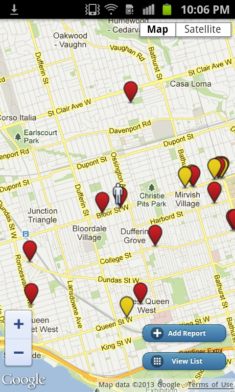
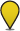
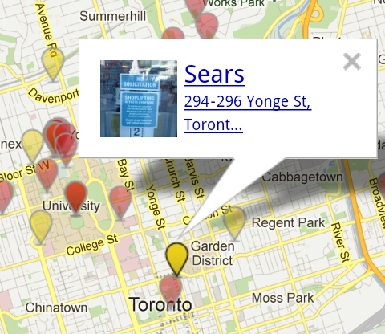
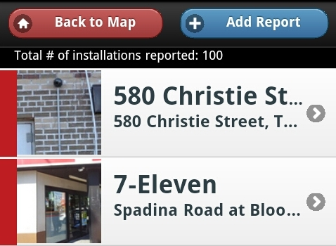
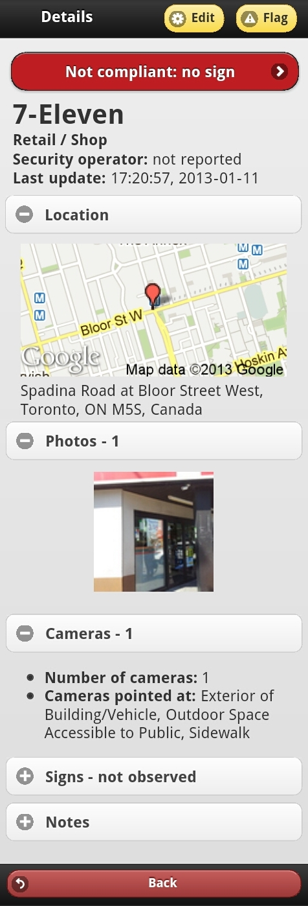

About The App
SurveillanceWatch is an application that maps the location of surveillance cameras using crowdsourced contributions from people like you. A version is currently available on the web and as an Android app (optimized for version 2.3 and up).
Download APK - v2.2.3 (Google account not required) | Download from Google Play
You can use SurveillanceWatch to:
- spot the video surveillance in your vicinity
- tell others about the video surveillance you spot
- alert you to video surveillance that is not privacy compliant
- learn about your privacy rights under Canadian law
You can help make SurveillanceWatch better! Email us about any bugs or suggestions for improvement: SurveillanceRights [at] gmail [dot] com
How it Works
SurveillanceWatch collects crowdsourced information about video surveillance installations (one or more cameras monitoring a particular space for a particular owner). Some examples of installations are:
- a pair of police cameras monitoring an intersection
- multiple cameras monitoring the space outside of a bank or a shopping centre
- a single camera monitoring the entrance to a store
In Canada, video surveillance installations operated by public bodies or for commercial purposes must be accompanied by clearly visible signs that provide passersby with basic information about their operation.
Map View
 The Map View shows you surveillance installations that have been reported in your vicinity. The colour of the pin tells you whether it's compliant with Canadian privacy regulations such as PIPEDA.
Not privacy compliant! A red pin means that a notification sign has not been reported for this installation. If you think our information is incorrect, please help us out by editing the installation's information to tell us about its sign.

A yellow pin means that a notification sign has been reported, but it is missing such important information as:
- who is operating the camera
- who you can contact if you have questions
- the purpose(s) of the surveillance
- whether recording is taking place, and if so for how long recordings are normally kept
A yellow and green pin indicates an installation that meets the minimum signage requirements as outlined by the OPC. A minimally compliant surveillance installation is accompanied by a sign which:
- Is visible and readable to people before they enter surveilled space
- Includes basic information about:
- Who owns/operates it
- The purpose(s) of the surveillance
- Whether images are being monitored live, or recorded, or both
- Contact details for a timely response from the responsible privacy official (e.g. a title and a phone number)
- Relevant legal jurisdiction
A green pin indicates a surveillance installation that is fully compliant with Canadian privacy regulations.
 Tap on a pin to see more information about the owner and location of this video surveillance installation.
You can also see which installations share an owner as all unrelated pins will fade.
Tap on the popup to see more detailed information about that installation.
List View
 You may also browse a list of all reported installations.
Tap on any item in the list to see more detailed information about that installation.
View Installation Details
 Learn more about reported installations: who owns them and are they compliant with Canadian privacy regulations?
Edit or Flag an Installation
If an installation's details are incorrect or incomplete, you can update them by tapping the Edit button at the top of the page. Then fill in the details as you would for Add a Report.
If you believe an installation has been reported in error, or it contains inappropriate information, you may flag it using the button at the top of the screen. Our administrators will review the installation.
Add a Report
 To tell us about a surveillance installation, tap the Add Report button from the Map or List view.
To tell us about a surveillance installation, tap the Add Report button from the Map or List view.
Scroll through a list of nearby installations to see if it has already been reported to us. If so, you may choose to edit it.
If not, you may report on a new installation by telling us about:
- Who appears to be the owner of this surveillance?
- Is there a 3rd party security operator as well?
- Where is the surveillance located? You may type in an address, or position a pin on the map.
- What does it look like? You may upload photos of surveillance cameras and notification signs. Tap on the photo to tell us more about it: is it a photo of a sign or a camera?
- How many cameras are in this installation, and what are they pointed at?
- Is there a sign? If so, tell us what it says and how visible it is.
- Anything to add? Include a note at the end of your report.